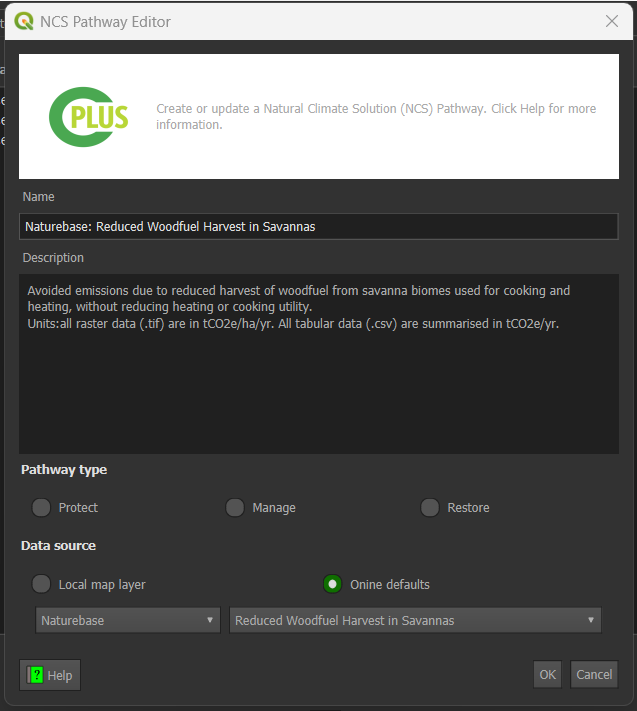
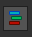

Step 2: NCS Pathways and Activities¶
Step 2 focuses on the activities and pathways. Step 2 of the process revolves around configuring NCS (Natural Climate Solutions) pathways and activities. This step is crucial for defining the activities to be performed and pathways to be followed during the analysis.

-
NCS pathways: Natural climate solution (NCS) Pathways which can be added to activities. Multiple pathways can be added to each activity.
-
Add NCS Pathways: The user can add the NCS pathways according to their preferences to add the NCS pathways, click on the plus icon to open the NCS pathways add window.
There are two ways to add the NCS Pathways:
- Add Manually

- Name: Enter the name of the NCS pathway.
- Description: Enter the description of the NCS pathway.
- Pathway Type: Select the type of the NCS pathway.
- Protect: Protect the world’s natural ecosystems from unsustainable practices and degradation.
- Manage: Farming systems and working lands must shift from net carbon emitters to carbon sinks.
- Restore: Restore ecosystem types and globally can reduce global greenhouse gas emissions and store additional carbon up to 3 gigatons annually.
- Map Layer: Choose the map layer from the downloaded data available in the system.
For example add map layer for Agroforestry

After entering all details, click on the OK button to add the NCS pathway.
- Add Online
Note: To use the Online Defaults option, the user needs to have an account on Trends.Earth platform.
-
The user can add the NCS pathways online by clicking on the
Online defaultsradio button and selecting the default online layers from the dropdown menu. - Name and the description will be filled automatically after choosing the NCS pathway.
-
Click on the OK button to add the NCS pathway.
After choosing from online default

-
Activities: Each selected activity will be created and used to perform the analysis.
-
Description: A description of the activity or pathway selected.
-
: Add the selected pathway to the selected activity.
-
: Adds all pathways to the selected activity.
-
 : Add a new activity.
: Add a new activity. -
 : Remove the selected activity.
: Remove the selected activity. -
: Edit the selected activity.
-
: Order the pixel values (activities) will be in the scenario output layer.
Activity Editor dialog¶

-
Name: The name of the new activity or activity being edited. Activity title will be used in the report
-
Description: A detailed description of the activity. This will be used in the report
-
Activity Mask: Activity Mask can be set to a specific mask to limit the pathways that can be added to the activity.By checking the box user will be able to apply the activity mask.
-
Style: Styles used for the activity:
-
Scenario layer: Colouring which will be used in the Scenario output for this activity
-
Output activity layer: Colour ramp which will be applied to the activity raster output layer
-
Activity Mask¶
Activity Masking enables users to exclude specific areas from analysis. This functionality helps in refining analyses by isolating regions that are not relevant or need to be avoided during operations or planning.
How Activity Masking works?¶
Imagine planning a journey or mapping an area, and you want to exclude specific region like restricted zones, private properties, or hazardous locations. This masking tool allows you to mark those areas, ensuring they are excluded from your plans or analysis. It is like instructing the system, avoid these areas, enabling you to focus on relevant zones and create more precise and efficient plans.
-
Here are activities displayed without applying any activity mask. This means all areas are included, and no regions have been excluded or hidden from the analysis.
-
After applying the mask, the specified area becomes restricted for any activities or work. This ensures that no operations or tasks are carried out within that area, effectively excluding it from the analysis. As shown in the image below, after applying the mask, the specified area is marked as restricted for that particular activity. This restriction ensures that no operations or tasks related to the specific activity take place within the designated area, effectively excluding it from the further analysis.
Apply Activity Mask¶
-
✅ Activity Mask: By checking this, the user will be able to add an activity mask.
-
: Add new activity mask. Click on this button to add a new activity mask. After clicking on the button, a new window will open from where user can select the shapefile.
1. File: Desired activity mask you want to apply.
2. Open: After selecting the file, click the
Openbutton to include it in the activity.3. Close: Click on the
Closebutton to close the window. -
:Edit activity mask. Select the file you want to edit and then click on the
Icon. This will open a new window, allowing you to choose a new activity mask.This will open a new window, allowing you to choose a new activity mask.
1. File: Desired activity mask you want to add.
2. Open: After selecting the file, click the
Openbutton to include it in the activity.3. Close: Click on the
Closebutton to close the window. -
: Remove the selected activity mask. Select the activity mask you want to remove and click on the
Icon.After clicking on the remove button, a confirmation dialog box will appear, prompting you to confirm the action.
No: Click on the
Nobutton to cancel the action.Yes: Click on the
Yesbutton to confirm the action and remove the activity mask.x: Click on the
xbutton to close the dialog box.
Ordering of the pixel values for the scenario output¶
A user can order the stack using the Style Pixel Value Editor.

Overall, Step 2 provides users with comprehensive tools for defining and configuring NCS pathways and activities, enabling efficient and accurate analysis and visualisation of natural climate solutions.
NCS Pathway Validation¶
-
Error Model: Whenever an error occurs the user will see the
Error Modelat the top. In this model, the user gets a basic idea about where to check for the detailed error logs.**Message:** NCS pathways are not valid or there is an ongoing validation process. Use the validation inspector to see more details. -
Validation Inspector: Click on the
Validation Inspect/Magnifying Glassicon, to view the detailed error logs. Upon clicking the validation error window will pop up, where all the detailed logs are available.
-
Arrows: Click on the available
Arrowbutton in front of the error to expand that error log.
-
Expand All: Click on the
Expand Allbutton, to expand all the error messages. -
Collapse All: Click on the
Collapse Allbutton, to collapse all the messages. -
Revalidate: Click on the
Revalidatebutton, to revalidate. Upon clicking the button, it will rerun the validations. -
Close: Click on the
Closebutton, to close the validation inspector window.
-
The user can also check the validation inspector window to view the failed validations.

Error Types
-
Rule: Must be of raster data type
-
Rule: Must have the same CRS
-
Rule: Must have a projected CRS type
-
Rule: NoData value must be -9999
-
Rule: Must have the same spatial resolution
-
Rule: NCS and respective carbon layers should have the same spatial resolution
Click here to explore the step 3 section.
Click here to explore the step 4 section.
Click here to explore the log section.